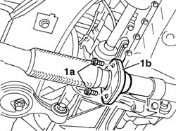
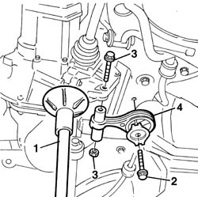
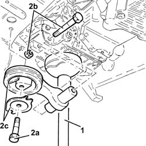
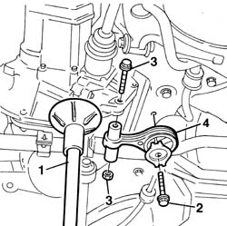
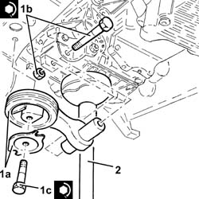

1008C10 power unit upper reaction link r r
- Path
- Procedures > 10 ENGINE > 1008 POWER UNIT SUPPORTS > 1008C POWER UNIT REACTION ELEMENTS > 1008C10 power unit upper reaction link r r
- Kind
- repair procedure (removal / refitting; the operation number is the code)
- Applies to
- all engines; all production periods
- Interactive page
- https://sloeber94.github.io/elrnDB-fDbl/en/#/2584162
Applies to: all engines; all production periods
 Removing
Removing
 Refitting
RefittingPosition the vehicle on a lift.
Raise the vehicle.
7055B54 under-engine guard - r r
1. Undo the bolts securing the exhaust manifold to the rear section.

Applies to: all engines; all production periods
Removing
RefittingPlace the car on a ramp.
7055B54 under-engine guard - r r
1076B50 exhaust pipe attachment to engine - r + r
1. Position a hydraulic lift under the oil sump in order to be able to work safely.
2. Undo the centre bolt fixing the support to the engine crossmember.
3. Undo and remove the bolt fixing the support to the gearbox.
4. Remove the rigid support complete with mounting.

Applies to: all engines; all production periods
Removing
RefittingPosition the vehicle on the ramp.
Proceed with the removal 7055B54 under-engine guard - r r .
Proceed with the removal 1076B50 exhaust pipe attachment to engine - r + r .
1. Position a hydraulic jack under the gearbox.
2. Undo the bolts (2a) and (2b) and remove the power unit reaction rod (2c).

Applies to: all engines; all production periods
1. Position a hydraulic jack to support the power unit.
2. Unscrew the bolt securing the reaction link to the suspension beam.
3. Unscrew the bolt securing the reaction rod to the gearbox.
4. Remove the reaction link.

Applies to: all engines; all production periods
Refitting
RemovingFit the rigid engine support.
Tighten the fastenings securing to the support to the gearbox and to the engine crossmember to torque.
 | Fastening | Component | Ø | Value (daNm) |
|---|---|---|---|---|
- | Bolt | REACTION ROD | M12 x 1.25 | (Crossmember side) 12 |
| Fastening | Component | Ø | Value (daNm) |
|---|---|---|---|---|
- | Bolt | REACTION ROD | M12 x 1.25 | (Gearbox side) 8 |
Remove the hydraulic lift positioned under the oil sump.
1076B50 exhaust pipe attachment to engine - r + r
7055B54 under-engine guard - r r
Remove the vehicle from the ramp.
Applies to: all engines; all production periods
Refitting
Removing1. Place the power unit reaction rod (1a) back in its housing and fix it tightening the bolts (1b) and (1c) to the recommended torque.
| Fastening | Component | Ø | Value (daNm) |
|---|---|---|---|---|
1b | Bolt | REACTION ROD | M12 | (Gearbox side) 7.2 ÷ 8.8 |
| Fastening | Component | Ø | Value (daNm) |
|---|---|---|---|---|
1c | Bolt | REACTION ROD | M12 | (Front suspension crossmember side) 11.4 ÷ 12.6 |
2. Remove the hydraulic jack from under the gearbox.

Applies to: all engines; all production periods
Refitting
RemovingTighten the nut securing the reation rod to the gearbox to torque.
| Fastening | Component | Ø | Value (daNm) |
|---|---|---|---|---|
- | Nut | REACTION ROD | M12 x 1.25 | 8 |
Tighten the bolt securing the reaction rod to the suspension beam to torque.
| Fastening | Component | Ø | Value (daNm) |
|---|---|---|---|---|
- | Bolt | REACTION ROD | M12 x 1.25 | 12 |
Tighten the bolts securing the exhaust manifold to the rear section to torque.
| Fastening | Component | Ø | Value (daNm) |
|---|---|---|---|---|
- | Nut | CATALYTIC CONVERTER (ONE) | M8 | (Flange connecting intermediate exhaust. pipe) 3 |
Remove the hydraulic jack.
7055B54 under-engine guard - r r
Lower the lift and remove the car.
Applies to: all engines; all production periods
Proceed with the refitting 1076B50 exhaust pipe attachment to engine - r + r .
Proceed with the refitting 7055B54 under-engine guard - r r .
Remove the car from the ramp.
Topics linked from this page (2)
Topics that link to this page (8)
- S11 ENGINE'BUZZING
- 1004B10 POWER UNIT WITH MANUAL GEARBOX - R.R
- 1004B12 power unit with manual gearbox - r+r for versions with a/c
- 1020D26 flywheel side oil seal cover - r+r
- 1024B10 engine flywheel - r + r for versions with manual gearbox
- 1810A20 clutch - r + r
- 1820a24 THRUST BEARING LINKAGE - R + R
- 2110A10 manual gearbox and differential - r + r